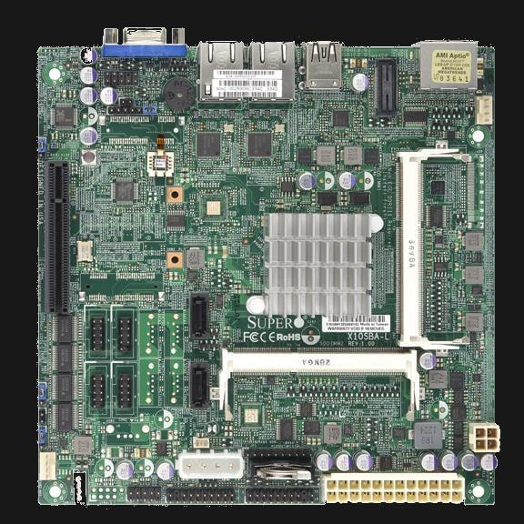

BytesOfProgress
Wiki
SuperMicro X10SBA-L Mainboard
The SuperMicro X10SBA-L, uses an energy-efficient Intel Celeron J1900 Quad-Core processor with low power consumption. It is an excellent base for a power-efficient web server or embedded applications.
Its quad-core architecture allows for efficient multitasking and handling of web server workloads, while its low power consumption makes it ideal for continuous operation without significantly impacting energy costs.
As an embedded motherboard, the X10SBA-L is suitable for various embedded applications such as industrial automation, kiosks, point-of-sale systems and IoT gateways. Its low power consumption and versatile connectivity options make it adaptable to a wide range of embedded projects.
Additionally, its compact Mini-ITX form factor makes it suitable for space-constrained environments where minimizing power usage and maximizing performance are crucial considerations.
SuperMicro's Docs
RAM
It supports up to 8 GiB Unbuffered non-ECC SO-DIMM, DDR3-1333MHz, in 2 DIMM slots, 1.35V only.
1333 / 1066MHz DDR3 SO-DIMM, 204-pin gold-plated DIMMs with 2 or 4 GiB per DIMM.
On-Board Devices
Chipset: System on Chip
SATA: SoC controller for 2 SATA2 (3 Gbps) ports
Network Controllers: Dual LAN with Intel® Ethernet Controller I210-AT
Audio: ALC 888S HD Audio
Graphics: Intel® HD Graphics
CPU
Intel® Celeron® Processor J1900, 4 cores, 4 threads
Single Socket FCBGA1170 supported, CPU TDP support Up to 8.5W TDP 2M Cache, up to 2.42 GHz, 8W (formerly Bay Trail)
I/O
2x RJ45 Gigabit Ethernet LAN ports
3x USB 2.0 ports (1 rear + 2 headers)
1x USB 3.0 ports (1 rear)
1x HDMI port
1x DisplayPort
1x VGA Port
4x COM Ports (headers)
4x fast UART 16550 serial
1x TPM Header
1x Audio header
4-pin 12V DC or ATX Power
Expansion Slots
1x PCI-E 2.0 x2 (in x8 slot)
BIOS
BIOS type: AMI UEFI
BIOS features: Plug and Play (PnP), ACPI 5.0, UEFI 2.3.1, SMBIOS 2.7.1, DMI 2.3, USB Keyboard support, RTC (Real Time Clock) Wakeup
back